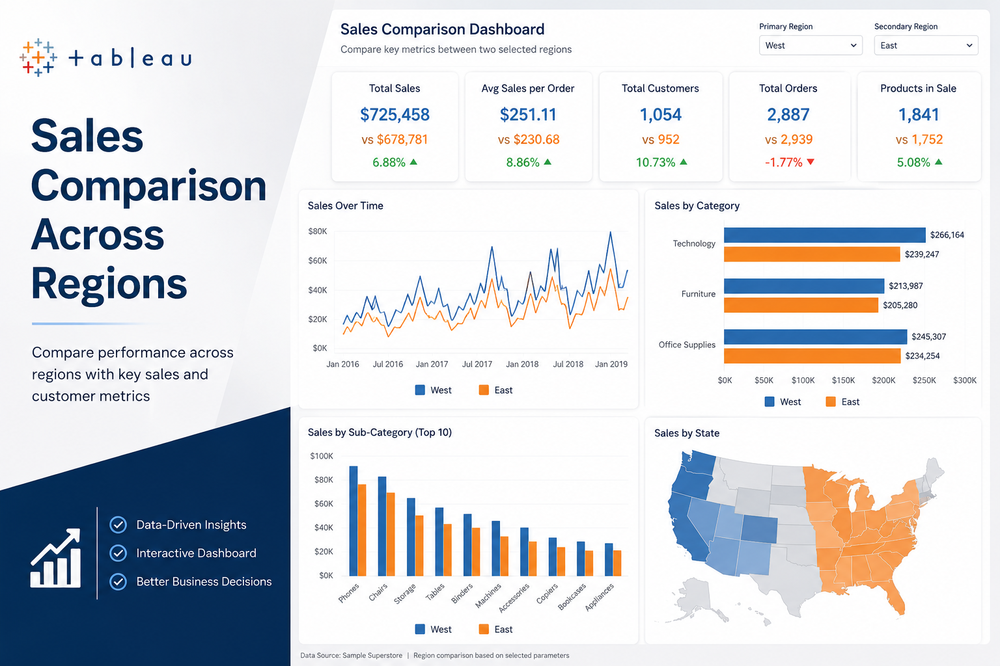
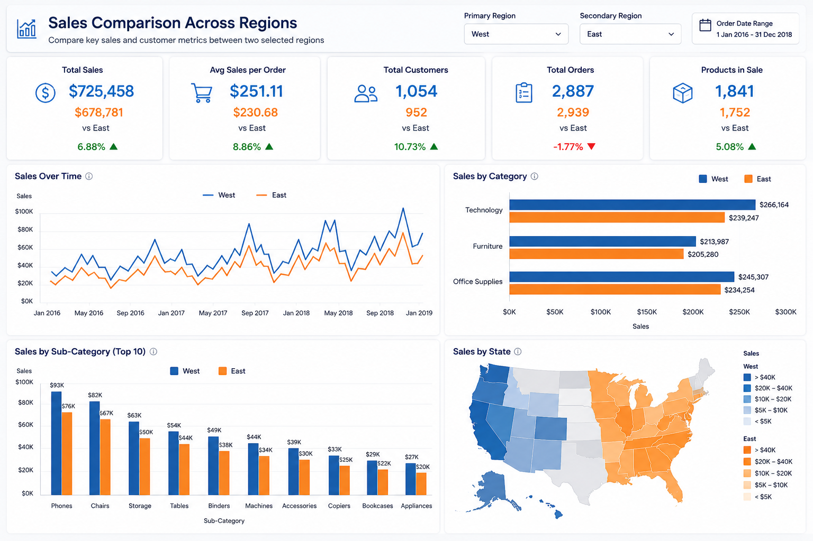
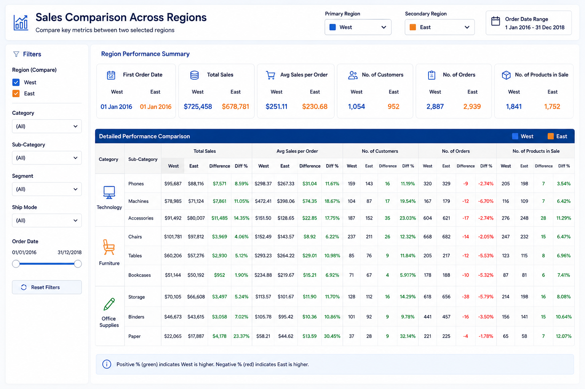

Sales Comparison Across Regions
Interactive Tableau dashboard built to compare sales performance across selected regions using KPIs such as total sales, average sales per order, customer count, order volume, and product-level activity. The dashboard enables quick side-by-side regional comparison through dynamic filters and performance views.

Dashboard Overview
This Tableau project was created to compare sales performance between two selected regions using a parameter-driven dashboard. The goal was to make regional performance analysis more interactive by placing key business metrics side by side and allowing quick comparisons across sales, customers, orders, and product categories.
The dashboard combines summary KPIs with category-level and state-level views so that users can identify which region is performing better, where the differences are coming from, and how product and customer activity varies across the selected regions.
What the Dashboard Measures
Core Metrics Compared
- Total Sales by selected region
- Average Sales per Order
- Total Customers
- Total Orders
- Number of Products in Sale
- First Order Date comparison
Comparison Views Included
- Sales trend comparison over time
- Category and sub-category level comparison
- State-wise sales view by region
- Filter-driven regional selection
- Performance summary with difference indicators
- Interactive dashboard exploration for business users
Visual Highlights


Outcome & Takeaways
This project demonstrates how a simple Tableau dashboard can make regional performance analysis more actionable by presenting the same business metrics across two selected regions in a structured comparison format. Instead of reviewing sales, orders, and customer activity in isolation, the dashboard brings them together in one interactive view, making it easier to spot regional differences and support faster decision-making.